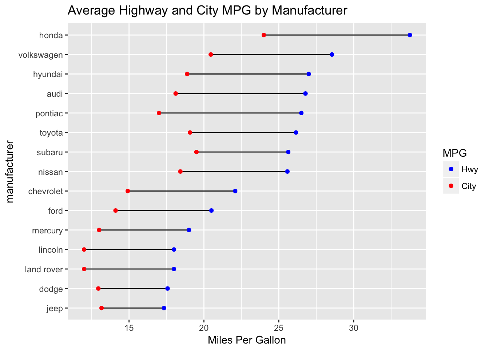
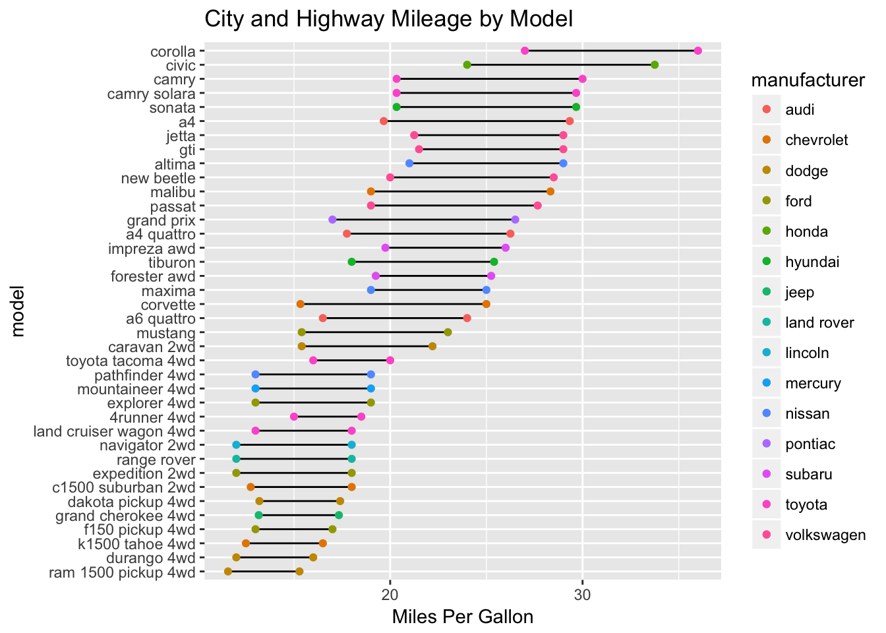
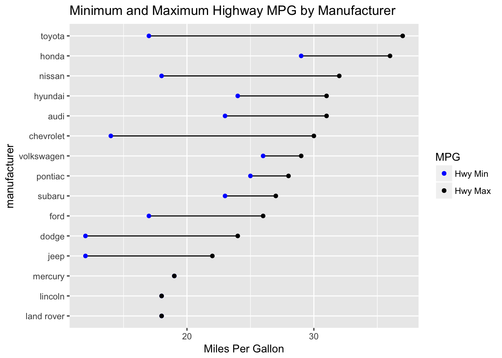

Dumbell plots, which I’ve also seen called DNA plots, are an interesting way to visualize relationships between groups, and within groups in the same plot. I recently made one in Tableau, so I wanted to replicate the plot in R. For this example, I used the mpg dataset from the datasets library.
data("mpg")
knitr::kable(head(mpg))| manufacturer | model | displ | year | cyl | trans | drv | cty | hwy | fl | class |
|---|---|---|---|---|---|---|---|---|---|---|
| audi | a4 | 1.8 | 1999 | 4 | auto(l5) | f | 18 | 29 | p | compact |
| audi | a4 | 1.8 | 1999 | 4 | manual(m5) | f | 21 | 29 | p | compact |
| audi | a4 | 2.0 | 2008 | 4 | manual(m6) | f | 20 | 31 | p | compact |
| audi | a4 | 2.0 | 2008 | 4 | auto(av) | f | 21 | 30 | p | compact |
| audi | a4 | 2.8 | 1999 | 6 | auto(l5) | f | 16 | 26 | p | compact |
| audi | a4 | 2.8 | 1999 | 6 | manual(m5) | f | 18 | 26 | p | compact |
# Create a summary table for the plot
mpg_summary <- mpg %>% filter(year == 2008) %>%
group_by(manufacturer) %>%
summarize(city = mean(cty), hwy = mean(hwy)) %>%
mutate(difference = hwy-city)
# This step assigns levels to the factor, allowing you to sort by highway mileage
# There must be a more elegant way to do that.
mpg_summary$manufacturer <- factor(mpg_summary$manufacturer,
levels = mpg_summary$manufacturer[order(mpg_summary$hwy)])
plot <- ggplot(mpg_summary, aes(x = city, y = manufacturer)) +
geom_segment(aes(x = hwy, xend = (hwy-difference), y = manufacturer, yend = manufacturer)) +
geom_point(aes(x = city, color = "red")) +
geom_point(aes(x = hwy, color = "blue")) +
scale_color_manual(labels = c("Hwy", "City"), values = c("blue", "red")) +
labs(x = "Miles Per Gallon", colour = "MPG", title = "Average Highway and City MPG by Manufacturer")
plot
To make the plots, I ended up making a geom_segment for the bar, and two distinct layers of geom_point for the circles on either end of the bars. Overall, this is pretty similar to the plot I set out to create.
mpg_summary <- mpg %>% filter(year == 2008) %>%
group_by(manufacturer, model) %>%
summarize(city = mean(cty), hwy = mean(hwy)) %>%
mutate(difference = hwy-city)
mpg_summary$model <- factor(mpg_summary$model,
levels = mpg_summary$model[order(mpg_summary$hwy)])
plot <- ggplot(mpg_summary, aes(x = city, y = model)) +
geom_segment(aes(x = hwy, xend = (hwy-difference), y = model, yend = model)) +
geom_point(aes(x = city, color = manufacturer)) +
geom_point(aes(x = hwy, color = manufacturer)) +
labs(x = "Miles Per Gallon", title = "City and Highway Mileage by Model")
plot
It looks like it really doesn’t matter where you drive your 4Runner or Tacoma, because you will not change your mileage much. It also looks like (of popular cars in 2008) you should really consider a Corolla or Civic if you want to prioritize miles per gallon.
This plot illustrates some characteristics of the manufacturers. For example, the breadth of Toyota’s highway mileage demonstrates the variety of vehicles Toyota manufactures. It also looks like Jeep isn’t prioritizing its fleet’s MPG.
mpg_summary <- mpg %>% filter(year == 2008) %>%
group_by(manufacturer) %>%
summarize(hwy_min = min(hwy), hwy_max = max(hwy)) %>%
mutate(difference = hwy_max-hwy_min)
mpg_summary$manufacturer <- factor(mpg_summary$manufacturer,
levels = mpg_summary$manufacturer[order(mpg_summary$hwy_max)])
plot <- ggplot(mpg_summary, aes(x = hwy_max, y = manufacturer)) +
geom_segment(aes(x = hwy_max, xend = (hwy_max-difference), y = manufacturer, yend = manufacturer)) +
geom_point(aes(x = hwy_min, color = "black")) +
geom_point(aes(x = hwy_max, color = "blue")) +
scale_color_manual(labels = c("Hwy Min", "Hwy Max"), values = c("blue", "black")) +
labs(x = "Miles Per Gallon", colour = "MPG", title = "Minimum and Maximum Highway MPG by Manufacturer")
plot
Overall, I thought it was a pretty quick process to create a few different dumbell plots in R, thanks to the portability of writing code, compared to Tableau’s drag and drop process. I have to say though that while Tableau has its quirks, this exercise left me wishing that ggplot2 had a tooltip feature.